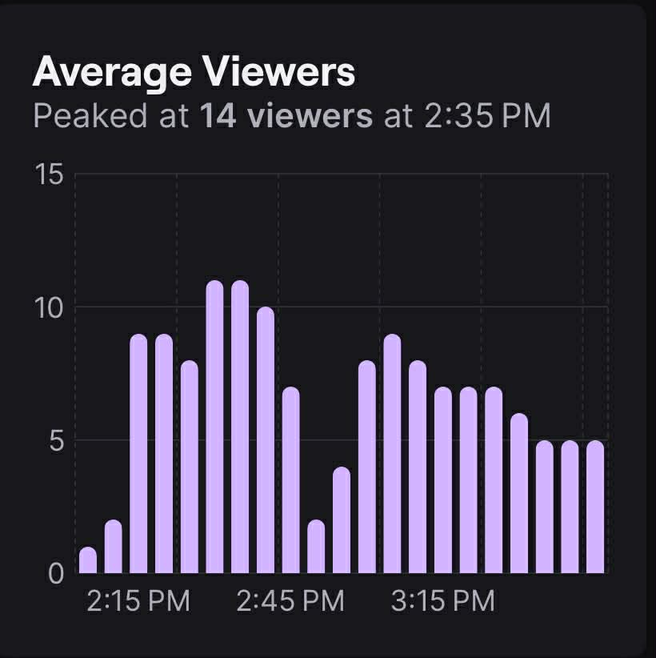
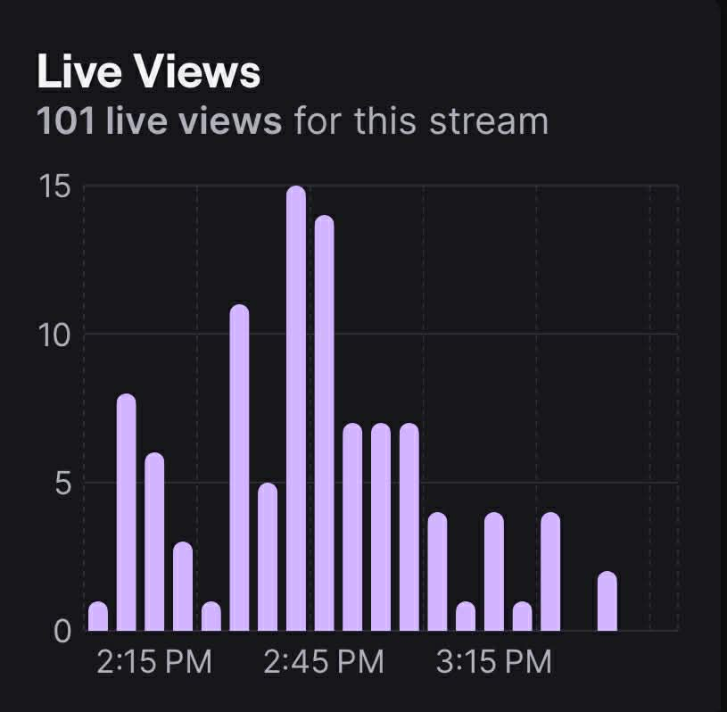
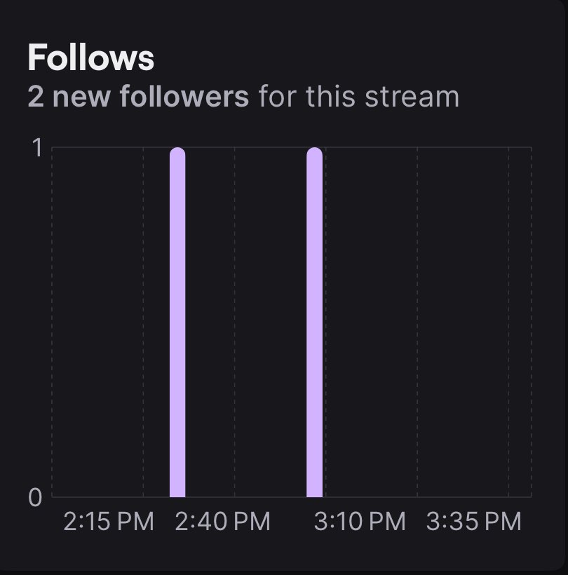
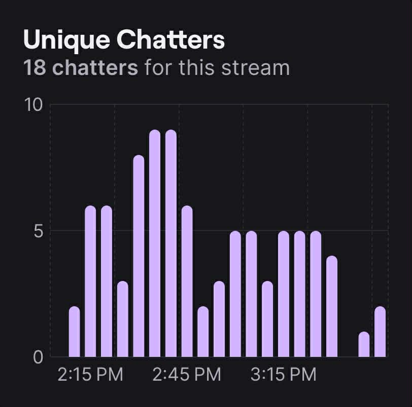
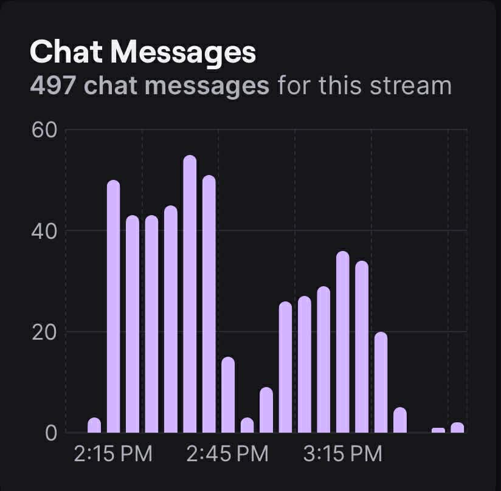

Chaotic Chefs
Exploring the kitchen with 5 students, what could possibly happen?
Welcome to Yummers Cookery! A group of students who aspires to cook and bake around the house kitchen.
Welcome to Yummers Cookery! A group of students who aspires to cook and bake around the house kitchen.
We are Group 2 from APEC Schools Las Pinas, consisting of 5 students. This website is for promoting our upcoming stream that will include: cooking of dishes and possibly bake (don't miss it out!). We invite you all to catch us live very soon and watch how chaotic it can get if things don't work out properly in the kitchen. Don't miss out anything and stay tuned. Follow us on our social medias for updates!
I enjoyed watching ur stream most especially that I found ur research topic interesting
I love the improvement of the second stream!
Get better signal quality or device since it was laggy on some parts. Nice stream though
I will miss Yummers Cookery :(
| Time | Topic | Activity | Time Allotment (mins) | Screen | Audio |
|---|---|---|---|---|---|
| 1:30-1:50 | None | Preparation | 30 mins | Overlay | None |
| 1:50-2:00 | Introduction & Agenda | Introducing of group members and sharing of agenda | 10 mins | Video/Overlay | Video Audio/Mic |
| 2:00-3:00 | Cooking & Session | While cooking, the educational talk about collaboration will also happen. Basically an audience engagement | 1 hour | Video/Overlay | Video Audio/Mic |
| 3:00-3:15 | Feedback | Sharing of feedback form to the audience for further improvements | 15 mins | Video/Overlay | Video Audio/Mic |
| 3:15-3:30 | Ending | Saying goodbyes and thank you for the support | 15 mins | Video/Overlay | Video Audio/Mic |

As shown in the graph, we can see that the number of viewers peaked at 2:35 PM. From 2:45PM to 3:15PM, it gradually got lower due to technical difficulties. Our first stream reached 12 peak viewers in the stream, while the second stream which is improved reached with a peak viewers OF 14 viewers. This shows an increase of peak view for our second stream.

As shown in the graph, we can see that the stream got a total of 101 live viewers, meaning that the stream did well and reached a high number of viewers. We could also see that at 2:45PM we got the highest number of viewers, and at 3:15PM it got lower due to technical difficulties. While the first stream reached more live view with 134 live views, the second stream only reached 101 live views. This means that there is a decrease of numbers for our live views for the second stream.

As shown in the graph, we see that 2 people followed our stream. 2:40PM we gained 1 follower and at 3:10PM we gained another follower. To compare with our first stream, as for the new followers our first stream gained 8 new followers while the second stream only gained 2 new followers.

As shown in the graph, we can see that 18 unique chatter were in the stream. This means that they're either watching on a third party site or they passed through the chat and left. As for the chatters, the first stream reached 23 unique chatters while the second stream only reached 18 unique chatters implementing that more chatters were in the first stream.

As shown in the graph, we can see that at 2:15PM chat messages peaked at 50 chatters, 2:45PM chat messages peaked at 55 chatters, and at 3:15PM it got lower reaching 35 chatters. This means that chatters were active at 2:45PM and got lower from time to time. For the live chat messages, the first stream reached 208 chats in the stream as for the second stream it reached 497 chats. This indicates that more engagement happened during the second stream.
E.T. Building 5, Lot 3 Naga Rd, Las Piñas, Kalakhang Maynila
nisegabrielle.github.io/yummers-cookeryz
yummerscookery@gmail.com